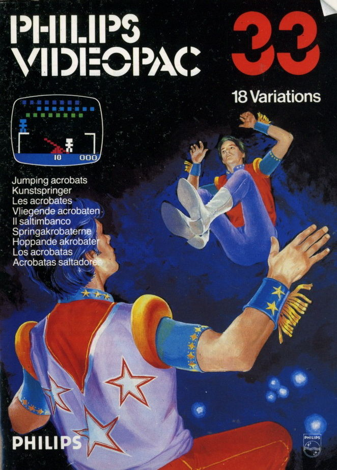

P.T. Barnum's Acrobats
P.T. Barnum's Acrobats
Details
|  | |
| Spielzeit | Nicht gespielt |
| Letzte Aktivität | Nie |
| Hinzugefügt | 29.09.2022 1:36:10 |
| Modifiziert | 10.11.2022 13:30:52 |
| Fertigstellungsstatus | Not Played |
| Bibliothek | Playnite |
| Quelle | |
| Plattform | Magnavox Odyssey 2 |
| Veröffentlichungsdatum | 1985 |
| Community Bewertungen | |
| Kritiker Punkte | |
| Benutzerwertung | |
| Genre | Arcade |
| Entwickler | North American Philips Consumer Electronics Corp. |
| Verleger | North American Philips Consumer Electronics Corp. |
| Eigenschaft | Single Player |
| Links | |
| Tag | [EMT] Logo Missing |
Beschreibung
P.T. BARNUM'S ACROBATS!
(1 or 2 players at a time)
SINGLE PLAYER VERSIONS
Press 0 on the numeric section of the keyboard.
You are under the Big Top at the Ringling Bros. Barnum and Bailey Circus!
One of the acrobats is standing on the platform at the left side of the screen. His partner is on the teeter board at the center of the screen.
Three rows of balloons are dancing back and forth high above their heads.
Use the joystick of the right hand control to move the teeter board from side to side.
Use the action button to make the acrobat jump from the platform. If he lands on the high end of the teeter board, the other acrobat will fly into the air. (The closer the first acrobat lands to the high end of the teeter board, the higher the second acrobat jumps. If he does not jump high enough to reach the first row of balloons, he will crash.)
If the flying acrobat hits a balloon it will pop and give him a bouncing chance to pop some others. Keep moving the teeter board so he lands on the high end when he finally comes down.
A complete game is a series of ten jumps. The number of jumps left in the game is displayed at the lower center of the screen.
Scoring:
BALLOONS IN BOTTOM ROW - 2 POINTS
BALLOONS IN MIDDLE ROW - 4 POINTS
BALLOONS IN TOP ROW - 6 POINTS
Your score is displayed at the lower right corner of the screen.
Bonus scoring:
ALL BALLOONS IN BOTTOM ROW - 15 POINTS
ALL BALLOONS IN MIDDLE ROW - 20 POINTS
ALL BALLOONS IN TOP ROW - 25 POINTS
When all of the balloons in a row have been popped, a full row of new balloons will appear automatically.
If you score over 999 (Nothing is impossible!), the counter at the lower right of the screen will start again at 000. A line directly over it will indicate you are working on your second thousand points!
To play again, press any key except SPACE or RESET!
Pressing SPACE will display the best score in a series of games at the lower left corner of the screen.
Pressing RESET will permit entry of game variations.
SINGLE PLAYER GAME VARIATIONS
Stationary shield under moving balloons. Press 3. A shield will appear below the bottom row of balloons at the center of the screen. If an acrobat hits it he will thud to earth faster than he can holler for HELLLLLLPPPPPP!
Random shield with moving balloons. Press 6. A shield will appear and disappear at random times and random positions below the balloons.
Stationary balloons. Press 9.
Stationary balloons with a stationary shield. Press C.
Stationary balloons with a random shield. Press F.
TWO PLAYER GAMES AND VARIATIONS
In the first version, players alternate turns every time an acrobat misses the high end of the teeter board. The scoring indicators signal which of the hand controls is activated. If the right scoring indicator is lighted, the right hand control is activated and vice versa.
Moving balloons - no shield. Press 1.
Moving balloons with a stationary shield. Press 4.
Moving balloons with a random shield. Press 7.
Stationary balloons - no shield. Press A.
Stationary balloons with a stationary shield. Press D.
Stationary balloons with a random shield. Press G.
In the second version, players take turns after each jump.
Moving balloons - no shield. Press 2.
Moving balloons with stationary shield. Press 5.
Moving balloons with random shield. Press 8.
Stationary balloons - no shield. Press B.
Stationary balloons with stationary shield. Press E.
Stationary balloons with random shield. Press H.
Press SPACE after a game is over to recall the high score in a series.
Press any key except SPACE or RESET to play another game of the same variation again.
To play a different game variation, press RESET and then the appropriate key.
SINGLE PLAYER GAME VARIATIONS
Press 0: Moving balloons - no shield
Press 3: Stationary shield - moving balloons
Press 6: Random shield - moving balloons
Press 9: Stationary balloons
Press C: Stationary balloons - stationary shield
Press F: Stationary balloons - random shield
TWO PLAYER GAMES AND VARIATIONS
Version I - Players alternate turns every time an acrobat misses the high end of the teeter board.
Press 1: Moving balloons - no shield
Press 4: Moving balloons - stationary shield
Press 7: Moving balloons - random shield
Press A: Stationary balloons - no shield
Press D: Stationary balloons - stationary shield
Press G: Stationary balloons - random shield
Version 2 - Players take turns after each jump.
Press 2: Moving balloons - no shield
Press 5: Moving balloons - stationary shield
Press 8: Moving balloons - random shield
Press B: Stationary balloons - no shield
Press E: Stationary balloons - stationary shield
Press H: Stationary balloons - random shield
(1 or 2 players at a time)
SINGLE PLAYER VERSIONS
Press 0 on the numeric section of the keyboard.
You are under the Big Top at the Ringling Bros. Barnum and Bailey Circus!
One of the acrobats is standing on the platform at the left side of the screen. His partner is on the teeter board at the center of the screen.
Three rows of balloons are dancing back and forth high above their heads.
Use the joystick of the right hand control to move the teeter board from side to side.
Use the action button to make the acrobat jump from the platform. If he lands on the high end of the teeter board, the other acrobat will fly into the air. (The closer the first acrobat lands to the high end of the teeter board, the higher the second acrobat jumps. If he does not jump high enough to reach the first row of balloons, he will crash.)
If the flying acrobat hits a balloon it will pop and give him a bouncing chance to pop some others. Keep moving the teeter board so he lands on the high end when he finally comes down.
A complete game is a series of ten jumps. The number of jumps left in the game is displayed at the lower center of the screen.
Scoring:
BALLOONS IN BOTTOM ROW - 2 POINTS
BALLOONS IN MIDDLE ROW - 4 POINTS
BALLOONS IN TOP ROW - 6 POINTS
Your score is displayed at the lower right corner of the screen.
Bonus scoring:
ALL BALLOONS IN BOTTOM ROW - 15 POINTS
ALL BALLOONS IN MIDDLE ROW - 20 POINTS
ALL BALLOONS IN TOP ROW - 25 POINTS
When all of the balloons in a row have been popped, a full row of new balloons will appear automatically.
If you score over 999 (Nothing is impossible!), the counter at the lower right of the screen will start again at 000. A line directly over it will indicate you are working on your second thousand points!
To play again, press any key except SPACE or RESET!
Pressing SPACE will display the best score in a series of games at the lower left corner of the screen.
Pressing RESET will permit entry of game variations.
SINGLE PLAYER GAME VARIATIONS
Stationary shield under moving balloons. Press 3. A shield will appear below the bottom row of balloons at the center of the screen. If an acrobat hits it he will thud to earth faster than he can holler for HELLLLLLPPPPPP!
Random shield with moving balloons. Press 6. A shield will appear and disappear at random times and random positions below the balloons.
Stationary balloons. Press 9.
Stationary balloons with a stationary shield. Press C.
Stationary balloons with a random shield. Press F.
TWO PLAYER GAMES AND VARIATIONS
In the first version, players alternate turns every time an acrobat misses the high end of the teeter board. The scoring indicators signal which of the hand controls is activated. If the right scoring indicator is lighted, the right hand control is activated and vice versa.
Moving balloons - no shield. Press 1.
Moving balloons with a stationary shield. Press 4.
Moving balloons with a random shield. Press 7.
Stationary balloons - no shield. Press A.
Stationary balloons with a stationary shield. Press D.
Stationary balloons with a random shield. Press G.
In the second version, players take turns after each jump.
Moving balloons - no shield. Press 2.
Moving balloons with stationary shield. Press 5.
Moving balloons with random shield. Press 8.
Stationary balloons - no shield. Press B.
Stationary balloons with stationary shield. Press E.
Stationary balloons with random shield. Press H.
Press SPACE after a game is over to recall the high score in a series.
Press any key except SPACE or RESET to play another game of the same variation again.
To play a different game variation, press RESET and then the appropriate key.
SINGLE PLAYER GAME VARIATIONS
Press 0: Moving balloons - no shield
Press 3: Stationary shield - moving balloons
Press 6: Random shield - moving balloons
Press 9: Stationary balloons
Press C: Stationary balloons - stationary shield
Press F: Stationary balloons - random shield
TWO PLAYER GAMES AND VARIATIONS
Version I - Players alternate turns every time an acrobat misses the high end of the teeter board.
Press 1: Moving balloons - no shield
Press 4: Moving balloons - stationary shield
Press 7: Moving balloons - random shield
Press A: Stationary balloons - no shield
Press D: Stationary balloons - stationary shield
Press G: Stationary balloons - random shield
Version 2 - Players take turns after each jump.
Press 2: Moving balloons - no shield
Press 5: Moving balloons - stationary shield
Press 8: Moving balloons - random shield
Press B: Stationary balloons - no shield
Press E: Stationary balloons - stationary shield
Press H: Stationary balloons - random shield